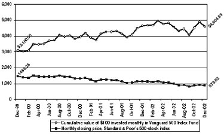

Human felicity is produc’d not so much by great Pieces of good Fortune that seldom happen, as by little Advantages that occur every day.
—Benjamin Franklin
After the stock-market bloodbath of the past few years, why would any defensive investor put a dime into stocks?
First, remember Graham’s insistence that how defensive you should be depends less on your tolerance for risk than on your willingness to put time and energy into your portfolio. And if you go about it the right way, investing in stocks is just as easy as parking your money in bonds and cash. (As we’ll see in Chapter 9, you can buy a stock-market index fund with no more effort than it takes to get dressed in the morning.)
Amidst the bear market that began in 2000, it’s understandable if you feel burned—and if, in turn, that feeling makes you determined never to buy another stock again. As an old Turkish proverb says, “After you burn your mouth on hot milk, you blow on your yogurt.” Because the crash of 2000–2002 was so terrible, many investors now view stocks as scaldingly risky; but, paradoxically, the very act of crashing has taken much of the risk out of the stock market. It was hot milk before, but it is room-temperature yogurt now.
Viewed logically, the decision of whether to own stocks today has nothing to do with how much money you might have lost by owning them a few years ago. When stocks are priced reasonably enough to give you future growth, then you should own them, regardless of the losses they may have cost you in the recent past. That’s all the more true when bond yields are low, reducing the future returns on income-producing investments.
As we have seen in Chapter 3, stocks are (as of early 2003) only mildly overpriced by historical standards. Meanwhile, at recent prices, bonds offer such low yields that an investor who buys them for their supposed safety is like a smoker who thinks he can protect himself against lung cancer by smoking low-tar cigarettes. No matter how defensive an investor you are—in Graham’s sense of low maintenance, or in the contemporary sense of low risk—today’s values mean that you must keep at least some of your money in stocks.
Fortunately, it’s never been easier for a defensive investor to buy stocks. And a permanent autopilot portfolio, which effortlessly puts a little bit of your money to work every month in predetermined investments, can defend you against the need to dedicate a large part of your life to stock picking.
Should You “Buy What You Know”?
But first, let’s look at something the defensive investor must always defend against: the belief that you can pick stocks without doing any homework. In the 1980s and early 1990s, one of the most popular investing slogans was “buy what you know.” Peter Lynch—who from 1977 through 1990 piloted Fidelity Magellan to the best track record ever compiled by a mutual fund—was the most charismatic preacher of this gospel. Lynch argued that amateur investors have an advantage that professional investors have forgotten how to use: “the power of common knowledge.” If you discover a great new restaurant, car, toothpaste, or jeans—or if you notice that the parking lot at a nearby business is always full or that people are still working at a company’s headquarters long after Jay Leno goes off the air—then you have a personal insight into a stock that a professional analyst or portfolio manager might never pick up on. As Lynch put it, “During a lifetime of buying cars or cameras, you develop a sense of what’s good and what’s bad, what sells and what doesn’t…and the most important part is, you know it before Wall Street knows it.” 1
Lynch’s rule—“You can outper-forms the experts if you use your edge by investing in companies or industries you already understand”—isn’t totally implausible, and thousands of investors have profited from it over the years. But Lynch’s rule can work only if you follow its corollary as well: “Finding the promising company is only the first step. The next step is doing the research.” To his credit, Lynch insists that no one should ever invest in a company, no matter how great its products or how crowded its parking lot, without studying its financial statements and estimating its business value.
Unfortunately, most stock buyers have ignored that part.
Barbra Streisand, the day-trading diva, personified the way people abuse Lynch’s teachings. In 1999 she burbled, “We go to Starbucks every day, so I buy Starbucks stock.” But the Funny Girl forgot that no matter how much you love those tall skinny lattes, you still have to analyze Starbucks’s financial statements and make sure the stock isn’t even more overpriced than the coffee. Countless stock buyers made the same mistake by loading up on shares of Amazon.com because they loved the website or buying e*Trade stock because it was their own online broker.
“Experts” gave the idea credence too. In an interview televised on CNN in late 1999, portfolio manager Kevin Landis of the Firsthand Funds was asked plaintively, “How do you do it? Why can’t I do it, Kevin?” (From 1995 through the end of 1999, the Firsthand Technology Value fund produced an astounding 58.2% average annualized gain.) “Well, you can do it,” Landis chirped. “All you really need to do is focus on the things that you know, and stay close to an industry, and talk to people who work in it every day.” 2
The most painful perversion of Lynch’s rule occurred in corporate retirement plans. If you’re supposed to “buy what you know,” then what could possibly be a better investment for your 401(k) than your own company’s stock? After all, you work there; don’t you know more about the company than an outsider ever could? Sadly, the employees of Enron, Global Crossing, and WorldCom—many of whom put nearly all their retirement assets in their own company’s stock, only to be wiped out—learned that insiders often possess only the illusion of knowledge, not the real thing.
Psychologists led by Baruch Fischhoff of Carnegie Mellon University have documented a disturbing fact: becoming more familiar with a subject does not significantly reduce people’s tendency to exaggerate how much they actually know about it. 3 That’s why “investing in what you know” can be so dangerous; the more you know going in, the less likely you are to probe a stock for weaknesses. This pernicious form of overconfidence is called “home bias,” or the habit of sticking to what is already familiar:
In short, familiarity breeds complacency. On the TV news, isn’t it always the neighbor or the best friend or the parent of the criminal who says in a shocked voice, “He was such a nice guy”? That’s because whenever we are too close to someone or something, we take our beliefs for granted, instead of questioning them as we do when we confront something more remote. The more familiar a stock is, the more likely it is to turn a defensive investor into a lazy one who thinks there’s no need to do any homework. Don’t let that happen to you.
Fortunately, for a defensive investor who is willing to do the required homework for assembling a stock portfolio, this is the Golden Age: Never before in financial history has owning stocks been so cheap and convenient. 5
Do it yourself. Through specialized online brokerages like www. sharebuilder.com, www.foliofn.com, and www.buyandhold.com, you can buy stocks automatically even if you have very little cash to spare. These websites charge as little as $4 for each periodic purchase of any of the thousands of U.S. stocks they make available. You can invest every week or every month, reinvest the dividends, and even trickle your money into stocks through electronic withdrawals from your bank account or direct deposit from your paycheck. Sharebuilder charges more to sell than to buy—reminding you, like a little whack across the nose with a rolled-up newspaper, that rapid selling is an investing no-no—while FolioFN offers an excellent tax-tracking tool.
Unlike traditional brokers or mutual funds that won’t let you in the door for less than $2,000 or $3,000, these online firms have no minimum account balances and are tailor-made for beginning investors who want to put fledgling portfolios on autopilot. To be sure, a transaction fee of $4 takes a monstrous 8% bite out of a $50 monthly investment—but if that’s all the money you can spare, then these microinvesting sites are the only game in town for building a diversified portfolio.
You can also buy individual stocks straight from the issuing companies. In 1994, the U.S. Securities and Exchange Commission loosened the handcuffs it had long ago clamped onto the direct sale of stocks to the public. Hundreds of companies responded by creating Internet-based programs allowing investors to buy shares without going through a broker. Some helpful online sources of information on buying stocks directly include www.dripcentral.com, www.netstock direct.com (an affiliate of Sharebuilder), and www.stockpower.com. You may often incur a variety of nuisance fees that can exceed $25 per year. Even so, direct-stock purchase programs are usually cheaper than stockbrokers.
Be warned, however, that buying stocks in tiny increments for years on end can set off big tax headaches. If you are not prepared to keep a permanent and exhaustively detailed record of your purchases, do not buy in the first place. Finally, don’t invest in only one stock—or even just a handful of different stocks. Unless you are not willing to spread your bets, you shouldn’t bet at all. Graham’s guideline of owning between 10 and 30 stocks remains a good starting point for investors who want to pick their own stocks, but you must make sure that you are not overexposed to one industry. 6 (For more on how to pick the individual stocks that will make up your portfolio, see pp. 114–115 and Chapters 11, 14, and 15.)
If, after you set up such an online autopilot portfolio, you find yourself trading more than twice a year—or spending more than an hour or two per month, total, on your investments—then something has gone badly wrong. Do not let the ease and up-to-the-minute feel of the Internet seduce you into becoming a speculator. A defensive investor runs—and wins—the race by sitting still.
Get some help. A defensive investor can also own stocks through a discount broker, a financial planner, or a full-service stockbroker. At a discount brokerage, you’ll need to do most of the stock-picking work yourself; Graham’s guidelines will help you create a core portfolio requiring minimal maintenance and offering maximal odds of a steady return. On the other hand, if you cannot spare the time or summon the interest to do it yourself, there’s no reason to feel any shame in hiring someone to pick stocks or mutual funds for you. But there’s one responsibility that you must never delegate. You, and no one but you, must investigate ( before you hand over your money) whether an adviser is trustworthy and charges reasonable fees. (For more pointers, see Chapter 10.)
Farm it out. Mutual funds are the ultimate way for a defensive investor to capture the upside of stock ownership without the downside of having to police your own portfolio. At relatively low cost, you can buy a high degree of diversification and convenience—letting a professional pick and watch the stocks for you. In their finest form—index portfolios—mutual funds can require virtually no monitoring or maintenance whatsoever. Index funds are a kind of Rip Van Winkle investment that is highly unlikely to cause any suffering or surprises even if, like Washington Irving’s lazy farmer, you fall asleep for 20 years. They are a defensive investor’s dream come true. For more detail, see Chapter 9.
As the financial markets heave and crash their way up and down day after day, the defensive investor can take control of the chaos. Your very refusal to be active, your renunciation of any pretended ability to predict the future, can become your most powerful weapons. By putting every investment decision on autopilot, you drop any self-delusion that you know where stocks are headed, and you take away the market’s power to upset you no matter how bizarrely it bounces.
As Graham notes, “dollar-cost averaging” enables you to put a fixed amount of money into an investment at regular intervals. Every week, month, or calendar quarter, you buy more—whether the markets have gone (or are about to go) up, down, or sideways. Any major mutual fund company or brokerage firm can automatically and safely transfer the money electronically for you, so you never have to write a check or feel the conscious pang of payment. It’s all out of sight, out of mind.
The ideal way to dollar-cost average is into a portfolio of index funds, which own every stock or bond worth having. That way, you renounce not only the guessing game of where the market is going but which sectors of the market—and which particular stocks or bonds within them—will do the best.
Let’s say you can spare $500 a month. By owning and dollar-cost averaging into just three index funds—$300 into one that holds the total U.S. stock market, $100 into one that holds foreign stocks, and $100 into one that holds U.S. bonds—you can ensure that you own almost every investment on the planet that’s worth owning. 7 Every month, like clockwork, you buy more. If the market has dropped, your preset amount goes further, buying you more shares than the month before. If the market has gone up, then your money buys you fewer shares. By putting your portfolio on permanent autopilot this way, you prevent yourself from either flinging money at the market just when it is seems most alluring (and is actually most dangerous) or refusing to buy more after a market crash has made investments truly cheaper (but seemingly more “risky”).
According to Ibbotson Associates, the leading financial research firm, if you had invested $12,000 in the Standard & Poor’s 500-stock index at the beginning of September 1929, 10 years later you would have had only $7,223 left. But if you had started with a paltry $100 and simply invested another $100 every single month, then by August 1939, your money would have grown to $15,571! That’s the power of disciplined buying—even in the face of the Great Depression and the worst bear market of all time. 8
Figure 5-1 shows the magic of dollar-cost averaging in a more recent bear market.
Best of all, once you build a permanent autopilot portfolio with index funds as its heart and core, you’ll be able to answer every market question with the most powerful response a defensive investor could ever have: “I don’t know and I don’t care.” If someone asks whether bonds will outper-forms stocks, just answer, “I don’t know and I don’t care”—after all, you’re automatically buying both. Will health-care stocks make high-tech stocks look sick? “I don’t know and I don’t care”—you’re a permanent owner of both. What’s the next Microsoft? “I don’t know and I don’t care”—as soon as it’s big enough to own, your index fund will have it, and you’ll go along for the ride. Will foreign stocks beat U.S. stocks next year? “I don’t know and I don’t care”—if they do, you’ll capture that gain; if they don’t, you’ll get to buy more at lower prices.
By enabling you to say “I don’t know and I don’t care,” a permanent autopilot portfolio liberates you from the feeling that you need to forecast what the financial markets are about to do—and the illusion that anyone else can. The knowledge of how little you can know about the future, coupled with the acceptance of your ignorance, is a defensive investor’s most powerful weapon.
FIGURE 5-1
Every Little Bit Helps

From the end of 1999 through the end of 2002, the S & P 500-stock average fell relentlessly. But if you had opened an index-fund account with a $3,000 minimum investment and added $100 every month, your total outlay of $6,600 would have lost 30.2%—considerably less than the 41.3% plunge in the market. Better yet, your steady buying at lower prices would build the base for an explosive recovery when the market rebounds.
Source: The Vanguard Group